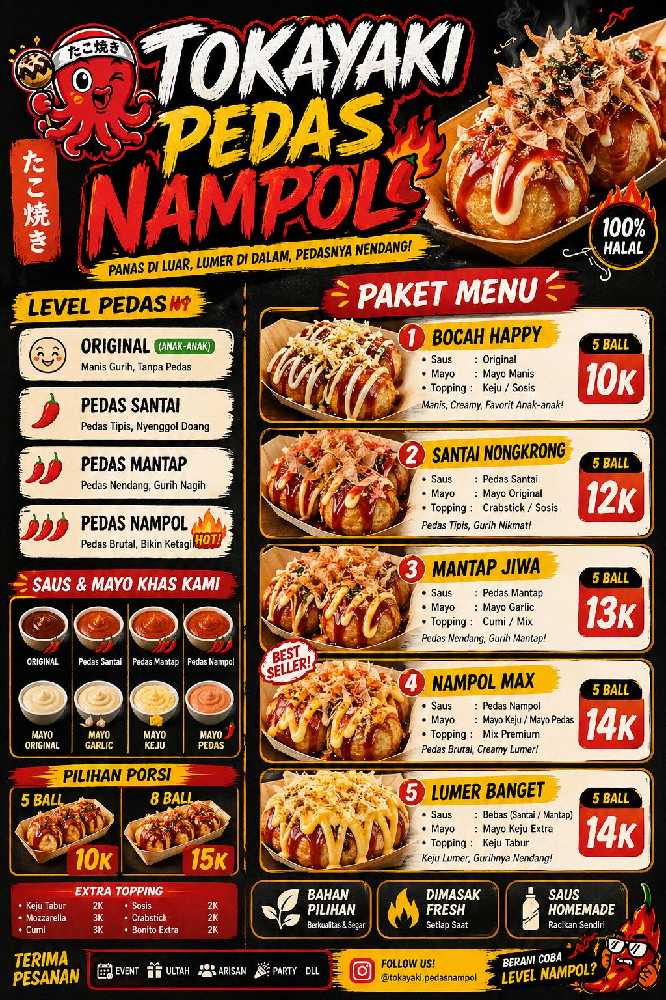
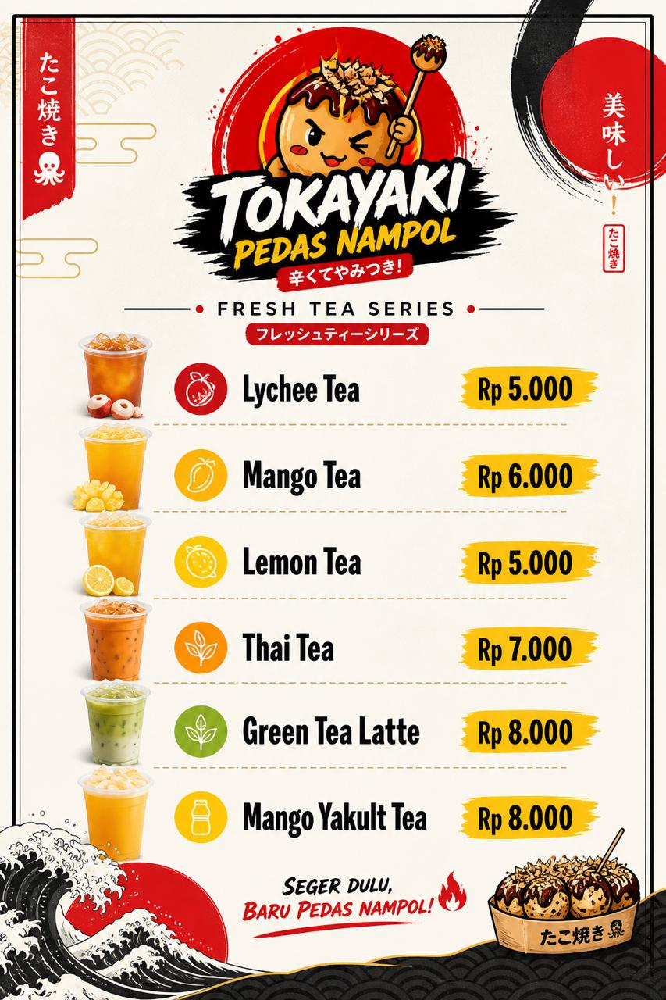

Menjadi brand takoyaki lokal khas Jepang-pedas yang dikenal luas
di Yogyakarta dan sekitarnya dengan konsep rasa unik,
pelayanan cepat, dan branding yang kuat.
🔥 Misi Kami
Menyajikan takoyaki berkualitas dan konsisten
Memberikan pelayanan cepat dan ramah
Membangun tim yang disiplin
Mengembangkan branding yang kuat
Mengelola bisnis dengan laporan keuangan sehat
Menu Kami
🔥 Takoyaki Series

🥤 Fresh Drink Series

Siap Cobain Pedas Nampol?
Cocok buat nongkrong, event, ulang tahun, dan cemilan favorit harian!